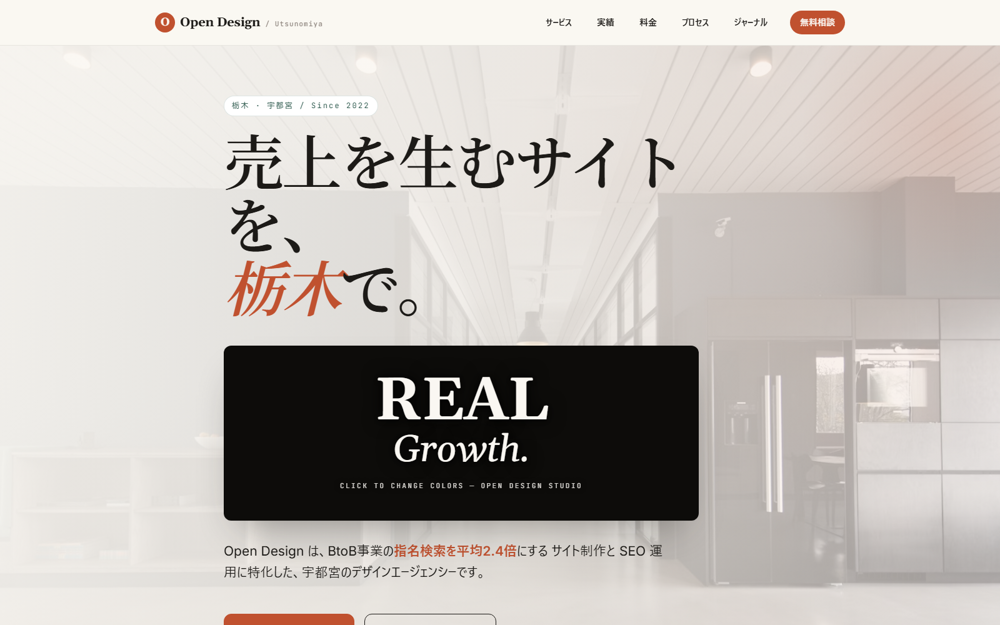

信頼性シグナル
代表の顔出し、実績の数値化、メディア掲載。「この人になら頼める」を作る要素群。
Trust
「おしゃれ」だけでは問い合わせは増えない。競合14社を6つの軸で100点採点し、本当に結果につながる15の原則を抽出。それを実装レベルで形にしたデモサイトです。
デザインは良いのに問い合わせが来ない。「なぜ売れるか」の設計が抜けている。
強い競合サイトの「勝ちパターン」が言語化されておらず、再現できない。
実績の見せ方、料金の透明性、顔出し。信頼につながる要素が抜け落ちている。
代表の顔出し、実績の数値化、メディア掲載。「この人になら頼める」を作る要素群。
CTAの配置・文言・導線。訪問者を迷わせず、自然に問い合わせへ運ぶ設計。
検索で見つかり、読んで価値がある。集客の土台になるコンテンツ設計。
第一印象と使いやすさ。美しさを「成果」に変換するための体験設計。
15の原則を実装したデモサイト。信頼性・CV設計・SEO・UXを一枚で体現しています。
